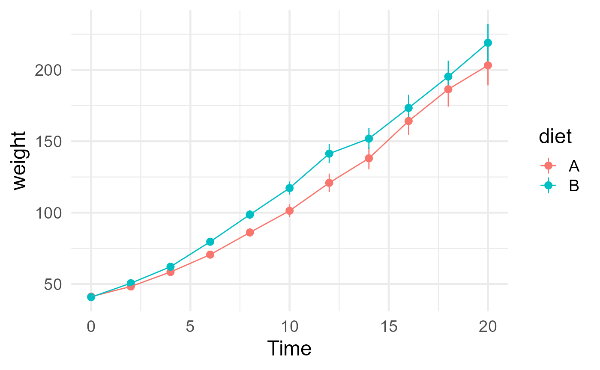

This vignette showcases tidy() and other ways of
collecting jlmerclusterperm objects as tidy data.
See more tutorials and vignettes on the Articles page.
Setup
library(jlmerclusterperm)
jlmerclusterperm_setup(verbose = FALSE)
julia_progress(show = FALSE)Minimal example data:
library(dplyr, warn.conflicts = FALSE)
library(ggplot2)
chickweights <- as_tibble(ChickWeight) %>%
mutate(diet = forcats::fct_collapse(Diet, A = c(1, 3), B = c(2, 4))) %>%
filter(Time %in% 0:20)
ggplot(chickweights, aes(Time, weight, color = diet)) +
stat_summary(fun.args = list(mult = 1.96)) +
stat_summary(geom = "line") +
theme_minimal(base_size = 18)
The jlmer specification object used for this showcase:
jlmer_spec <- make_jlmer_spec(
formula = weight ~ diet + (1 | Chick), data = chickweights,
subject = "Chick", time = "Time"
)
jlmer_spec
#> ── jlmer specification ───────────────────────────────────────── <jlmer_spec> ──
#> Formula: weight ~ 1 + dietB + (1 | Chick)
#> Predictors:
#> diet: dietB
#> Groupings:
#> Subject: Chick
#> Trial:
#> Time: Time
#> Data:
#> # A tibble: 533 × 4
#> weight dietB Chick Time
#> <dbl> <dbl> <chr> <dbl>
#> 1 42 0 1 0
#> 2 51 0 1 2
#> 3 59 0 1 4
#> # ℹ 530 more rows
#> ────────────────────────────────────────────────────────────────────────────────A tour of tidy() methods
All non-<data.frame> objects returned by
jlmerclusterperm functions have a tidy()
method to return a data frame representation of the object.
<timewise_statistics> objects
Functions compute_timewise_statistics() and
permute_timewise_statistics() return an object of class
<timewise_statistics>, which is an array of
statistics. Note that there isn’t a stylized print() method
for this class.
Instead, it is recommended to use tidy() to inspect the
results as a data frame where each statistic is represented as a
row.
In the case of compute_timewise_statistics(), the output
is a matrix (2D array) of predictor and time. Each dimension becomes a
column in the tidy() data:
empirical_statistics <- compute_timewise_statistics(jlmer_spec)
class(empirical_statistics)
#> [1] "timewise_statistics"
dim(empirical_statistics) # predictor x time
#> [1] 1 11
tidy(empirical_statistics)
#> # A tibble: 11 × 3
#> predictor time statistic
#> <chr> <dbl> <dbl>
#> 1 dietB 0 -1.09
#> 2 dietB 2 2.29
#> 3 dietB 4 3.14
#> 4 dietB 6 4.01
#> 5 dietB 8 2.90
#> 6 dietB 10 2.44
#> 7 dietB 12 2.18
#> 8 dietB 14 1.26
#> 9 dietB 16 0.673
#> 10 dietB 18 0.532
#> 11 dietB 20 0.809In the case of compute_timewise_statistics(), the output
is a 3D array of simulation, time, and predictor. Again, each dimension
becomes a column in the tidy() data:
null_statistics <- permute_timewise_statistics(jlmer_spec, nsim = 1000)
class(null_statistics)
#> [1] "timewise_statistics"
dim(null_statistics) # simulation x time x predictor
#> [1] 1000 11 1
tidy(null_statistics)
#> # A tibble: 11,000 × 4
#> predictor time statistic sim
#> <chr> <dbl> <dbl> <fct>
#> 1 dietB 0 -0.309 0001
#> 2 dietB 0 2.10 0002
#> 3 dietB 0 -2.83 0003
#> 4 dietB 0 -0.568 0004
#> 5 dietB 0 2.10 0005
#> 6 dietB 0 -1.09 0006
#> 7 dietB 0 -0.830 0007
#> 8 dietB 0 -0.0515 0008
#> 9 dietB 0 -0.0515 0009
#> 10 dietB 0 0.206 0010
#> # ℹ 10,990 more rows
<empirical_clusters> objects
The <empirical_clusters> object returned by
extract_empirical_clusters() does have a print method
defined, which makes it easier on the eye:
empirical_clusters <- extract_empirical_clusters(empirical_statistics, threshold = 1)
class(empirical_clusters)
#> [1] "empirical_clusters"
empirical_clusters
#> ── Empirical clusters (t > 1) ────────────────────────── <empirical_clusters> ──
#> dietB
#> [2, 14]: 18.231
#> ────────────────────────────────────────────────────────────────────────────────The tidy() data frame representation also contains
information like length, which is the number of time points
that the cluster spans. The id variable uniquely identifies
a cluster within each predictor.
tidy(empirical_clusters)
#> # A tibble: 1 × 6
#> predictor id start end length sum_statistic
#> <chr> <fct> <dbl> <dbl> <dbl> <dbl>
#> 1 dietB 1 2 14 7 18.2
<null_cluster_dists> objects
The <null_cluster_dists> object returned by
extract_null_cluster_dists() also has a print method
defined, which displays summary statistics:
null_cluster_dists <- extract_null_cluster_dists(null_statistics, threshold = 1)
class(null_cluster_dists)
#> [1] "null_cluster_dists"
null_cluster_dists
#> ── Null cluster-mass distribution (t > 1) ────────────── <null_cluster_dists> ──
#> dietB (n = 1000)
#> Mean (SD): 0.014 (7.11)
#> Coverage intervals: 95% [-15.360, 15.902]
#> ────────────────────────────────────────────────────────────────────────────────The null distribution is constructed from the largest cluster-mass statistic observed in each of the bootstrapped permutations of the original data. In other words, each simulation contributes one sample to the null.
In the tidy() representation, each simulation of a
predictor represents a row. The sum_statistic column
represents the size of the largest cluster from each
simulation. When no clusters are found, the column is zero and values
for start, end, and length are
NA.
tidy(null_cluster_dists)
#> # A tibble: 1,000 × 6
#> predictor start end length sum_statistic sim
#> <chr> <dbl> <dbl> <dbl> <dbl> <fct>
#> 1 dietB 8 20 7 11.1 0001
#> 2 dietB 6 10 3 3.75 0002
#> 3 dietB 18 20 2 2.07 0003
#> 4 dietB 2 10 5 6.00 0004
#> 5 dietB 4 10 4 5.91 0005
#> 6 dietB NA NA NA 0 0006
#> 7 dietB 8 20 7 12.2 0007
#> 8 dietB 2 8 4 5.29 0008
#> 9 dietB NA NA NA 0 0009
#> 10 dietB NA NA NA 0 0010
#> # ℹ 990 more rowsThe output of tidy(null_statistics) and
tidy(null_cluster_dists) form a relational data. For
example, you can use left_join() to find the time wise
statistics of the permuted data with the most extreme cluster-mass
statistic:
largest_permuted_cluster <- tidy(null_cluster_dists) %>%
slice(which.max(abs(sum_statistic))) %>%
left_join(tidy(null_statistics), by = c("predictor", "sim"))
largest_permuted_cluster
#> # A tibble: 11 × 8
#> predictor start end length sum_statistic sim time statistic
#> <chr> <dbl> <dbl> <dbl> <dbl> <fct> <dbl> <dbl>
#> 1 dietB 2 20 10 29.4 0319 0 -1.09
#> 2 dietB 2 20 10 29.4 0319 2 1.67
#> 3 dietB 2 20 10 29.4 0319 4 2.56
#> 4 dietB 2 20 10 29.4 0319 6 2.97
#> 5 dietB 2 20 10 29.4 0319 8 3.47
#> 6 dietB 2 20 10 29.4 0319 10 3.54
#> 7 dietB 2 20 10 29.4 0319 12 3.49
#> 8 dietB 2 20 10 29.4 0319 14 3.54
#> 9 dietB 2 20 10 29.4 0319 16 3.05
#> 10 dietB 2 20 10 29.4 0319 18 2.65
#> 11 dietB 2 20 10 29.4 0319 20 2.48Note that the sum_statistic is simply the sum of the
statistic values over the span of the largest cluster:
In other contexts
The output of calculate_clusters_pvalues() is just an
<empirical_clusters> object that has been augmented
with p-values:
tested_clusters <- calculate_clusters_pvalues(empirical_clusters, null_cluster_dists)
tested_clusters
#> ── Empirical clusters (t > 1) ────────────────────────── <empirical_clusters> ──
#> dietB
#> [2, 14]: 18.231 (p=0.0270)
#> ────────────────────────────────────────────────────────────────────────────────When available, p-values are returned as a column in the
tidy() data:
tidy(tested_clusters)
#> # A tibble: 1 × 7
#> predictor id start end length sum_statistic pvalue
#> <chr> <fct> <dbl> <dbl> <dbl> <dbl> <dbl>
#> 1 dietB 1 2 14 7 18.2 0.027Note that the p-value for this cluster is 0.027 because there are 27 samples from the null that are as or more extreme than the observed:
tidy(null_cluster_dists) %>%
filter(abs(sum_statistic) >= abs(tidy(tested_clusters)$sum_statistic))
#> # A tibble: 27 × 6
#> predictor start end length sum_statistic sim
#> <chr> <dbl> <dbl> <dbl> <dbl> <fct>
#> 1 dietB 0 20 11 -18.7 0072
#> 2 dietB 0 20 11 -19.4 0114
#> 3 dietB 6 20 8 19.0 0118
#> 4 dietB 0 20 11 -23.6 0137
#> 5 dietB 4 20 9 -21.7 0142
#> 6 dietB 2 20 10 24.7 0268
#> 7 dietB 4 20 9 22.7 0289
#> 8 dietB 2 20 10 29.4 0319
#> 9 dietB 2 20 10 26.4 0325
#> 10 dietB 4 20 9 26.5 0384
#> # ℹ 17 more rowsIn the case of the one-fell-swoop function
clusterpermute(), the
<null_cluster_dists> object and the
<empirical_clusters> object are returned in a
list:
# Timing the entire process this time
system.time({
full_test <- clusterpermute(jlmer_spec, threshold = 1, nsim = 1000, progress = FALSE)
})
#> user system elapsed
#> 0.02 0.04 2.12
full_test
#> $null_cluster_dists
#> ── Null cluster-mass distribution (t > 1) ────────────── <null_cluster_dists> ──
#> dietB (n = 1000)
#> Mean (SD): 0.066 (7.61)
#> Coverage intervals: 95% [-16.959, 17.216]
#> ────────────────────────────────────────────────────────────────────────────────
#>
#> $empirical_clusters
#> ── Empirical clusters (t > 1) ────────────────────────── <empirical_clusters> ──
#> dietB
#> [2, 14]: 18.231 (p=0.0420)
#> ────────────────────────────────────────────────────────────────────────────────You can tidy() the elements of this list with
lapply() or purrr::map():
lapply(full_test, tidy)
#> $null_cluster_dists
#> # A tibble: 1,000 × 6
#> predictor start end length sum_statistic sim
#> <chr> <dbl> <dbl> <dbl> <dbl> <fct>
#> 1 dietB 14 20 4 -5.26 0001
#> 2 dietB 14 20 4 9.22 0002
#> 3 dietB 6 20 8 11.8 0003
#> 4 dietB NA NA NA 0 0004
#> 5 dietB NA NA NA 0 0005
#> 6 dietB 16 20 3 -3.69 0006
#> 7 dietB 14 20 4 6.23 0007
#> 8 dietB NA NA NA 0 0008
#> 9 dietB 12 20 5 5.38 0009
#> 10 dietB NA NA NA 0 0010
#> # ℹ 990 more rows
#>
#> $empirical_clusters
#> # A tibble: 1 × 7
#> predictor id start end length sum_statistic pvalue
#> <chr> <fct> <dbl> <dbl> <dbl> <dbl> <dbl>
#> 1 dietB 1 2 14 7 18.2 0.0420Tidying Julia model objects
Functions jlmer() and to_jlmer() return an
object of class <jlmer_mod>, which is a JuliaConnectoR
pointer to the Julia model object:
jlmer_mod <- to_jlmer(weight ~ diet + (1 | Chick), chickweights)
class(jlmer_mod)
#> [1] "jlmer_mod" "JuliaStructProxy" "JuliaProxy"
jlmer_mod
#> <Julia object of type LinearMixedModel>
#> Variance components:
#> Column Variance Std.Dev.
#> Chick (Intercept) 305.1809 17.4694
#> Residual 3854.0809 62.0812
#> ──────────────────────────────────────────────────
#> Coef. Std. Error z Pr(>|z|)
#> ──────────────────────────────────────────────────
#> (Intercept) 108.16 4.76331 22.71 <1e-99
#> dietB 12.2644 7.45319 1.65 0.0999
#> ──────────────────────────────────────────────────You can use tidy() and glance() to return
information about the Julia model as a data frame:
tidy(jlmer_mod)
#> # A tibble: 4 × 7
#> effect group term estimate std.error statistic p.value
#> <chr> <chr> <chr> <dbl> <dbl> <dbl> <dbl>
#> 1 fixed NA (Intercept) 108. 4.76 22.7 3.83e-114
#> 2 fixed NA dietB 12.3 7.45 1.65 9.99e- 2
#> 3 ran_pars Chick sd__(Intercept) 17.5 NA NA NA
#> 4 ran_pars Residual sd__Observation 62.1 NA NA NA
glance(jlmer_mod)
#> # A tibble: 1 × 8
#> nobs df sigma logLik AIC BIC deviance df.residual
#> <int> <int> <dbl> <dbl> <dbl> <dbl> <dbl> <int>
#> 1 533 4 62.1 -2972. 5952. 5969. 5944. 529These mimic the behavior of the same methods from
broom/broom.mixed defined for
(g)lm/(g)lmer models:
library(lme4)
library(broom.mixed)
lmer_mod <- lmer(weight ~ diet + (1 | Chick), chickweights, REML = FALSE)
tidy(lmer_mod)
#> # A tibble: 4 × 6
#> effect group term estimate std.error statistic
#> <chr> <chr> <chr> <dbl> <dbl> <dbl>
#> 1 fixed NA (Intercept) 108. 4.76 22.7
#> 2 fixed NA dietB 12.3 7.45 1.65
#> 3 ran_pars Chick sd__(Intercept) 17.5 NA NA
#> 4 ran_pars Residual sd__Observation 62.1 NA NA
glance(lmer_mod)
#> # A tibble: 1 × 7
#> nobs sigma logLik AIC BIC deviance df.residual
#> <int> <dbl> <dbl> <dbl> <dbl> <dbl> <int>
#> 1 533 62.1 -2972. 5952. 5969. 5944. 529Note that Julia MixedModels.jl
defaults to REML = FALSE, whereas it is TRUE
by default in lme4.